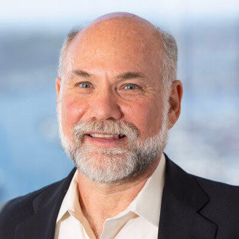

<div class="row mt-xs-0 mt-sm-0 mt-md-1 mt-lg-2 mt-xl-3 mb-xs-2 mb-sm-2">
    <div class="col conference">
        <div>
            <h4>HPDC 2026 Achievement Award</h4>

            <p>
                We are happy to announce that <b>Carl Kesselman</b> is the recipient of the 2026 Achievement
                Award in High Performance Distributed Computing.
            </p>

            <p>
                <b>Citation:</b>

                <i>For his contributions to high-performance distributed computing in the areas of grid computing architecture and applications, as well as his community leadership</i>
            </p>

            <p>
                Dr. Kesselman will deliver a keynote address and be recognized at the HPDC 2026 conference in Cleveland, Ohio, USA.
            </p>
            <div class="row">
                <div class="col-3 mx-auto d-flex align-items-start justify-content-center">
                    
                </div>
                <div class="col-9">
                    <p>Carl Kesselman is the William M. Keck Professor of Engineering at the University of Southern California, with appointments in the Daniel J. 
                        Epstein Department of Industrial and Systems Engineering, the Thomas Lord Department of Computer Science, the Keck School of Medicine, and the Herman Ostrow School of Dentistry. 
                        He is Director of the Informatics Systems Research Division at the USC Information Sciences Institute and is internationally recognized as one of the pioneers of Grid Computing and distributed cyberinfrastructure.

                        Kesselman co-founded the Globus Project, whose technologies and concepts helped establish the foundations for modern distributed, cloud, and data-intensive computing systems. His research has spanned distributed systems, 
                        scientific cyberinfrastructure, data integration, security, and large-scale collaborative science platforms. More recently, his work has focused on data-centric socio-technical ecosystems, AI-enabled scientific infrastructure, 
                        and agent-mediated systems that support long-running human-machine scientific interactions. He has co-authored four papers recognized in HPDC's retrospective list of the most important papers from the conference's first twenty years.

                        Kesselman is a Fellow of the ACM, IEEE, and the British Computer Society. His honors include the British Computer Society's Lovelace Medal, the IEEE Internet Award, and the IEEE Computer Society's Goode Memorial Award.
                    </p>
                </div>
            </div>
            <br>
            <div class="row mt-2">
                <div class="col text-justify conference-text">
                    <h6>Past Winners</h6>
                    <ul>
                        <li><b>2025: </b><i>Michela Taufer</i>, for her contributions to volunteer computing and advancing high-performance computing.</li>
                        <li><b>2024: </b><i>Laxmikant (Sanjay) Kale</i>, for pioneering development of task-based adaptive
                             parallel programming models and runtime systems, leading to a new category of highly scalable 
                             scientific applications.
                        </li>
                        <li><b>2023: </b><i>Manish Parashar</i>, for pioneering contributions in high performance
                            parallel and
                            distributed computational methods, data management, in-situ computing, and international
                            leadership in
                            cyberinfrastructure and translational computer science.
                        </li>
                        <li><b>2022: </b><i>Franck Cappello</i>, for his pioneering contributions in methods, tools, and
                            testbeds
                            for resilient high performance parallel and distributed computing.</li>
                        <li><b>2021: </b><i>Rosa M. Badia</i>, for her innovations in parallel task-based programming
                            models,
                            workflow
                            applications and systems, and leadership in the high performance computing research
                            community.</li>
                        <li><b>2020:</b> No award made.</li>
                        <li><b>2019: </b><i>Geoffrey Fox</i>, for his foundational contributions to parallel computing,
                            high-performance software, the interface between applications and systems, contributions to
                            education,
                            and outreach to underrepresented communities.</li>
                        <li><b>2018: </b><i>Satoshi Matsuoka</i>, for his pioneering research in the design,
                            implementation, and
                            application of high performance systems and software tools for parallel and distributed
                            systems.</li>
                        <li><b>2017: </b><i>David Abramson</i>, for his pioneering research in the design,
                            implementation, and
                            application of high performance systems and software tools for parallel and distributed
                            systems.</li>
                        <li><b>2016: </b><i>Jack Dongarra</i>, for his long-standing and far-reaching contributions in
                            high
                            performance linear algebra and large-scale parallel and distributed computing.</li>
                        <li><b>2015: </b><i>Ewa Deelman</i>, for her significant influence, contributions, and
                            distinguished use of
                            workflow systems in high-performance computing.</li>
                        <li><b>2014: </b><i>Rich Wolski</i>, for pioneering and high-impact contributions to grid,
                            cloud, and
                            parallel computing.</li>
                        <li><b>2013: </b><i>Miron Livny</i>, for his significant contribution and high impact in the
                            area of
                            high-throughput computing.</li>
                        <li><b>2012: </b><i>Ian Foster</i>, for his initiative in the creation and development of grid
                            computing and
                            his significant contributions to high-performance distributed computing in support of the
                            sciences.</li>
                    </ul>
                </div>
            </div>
        </div>
    </div>
</div>